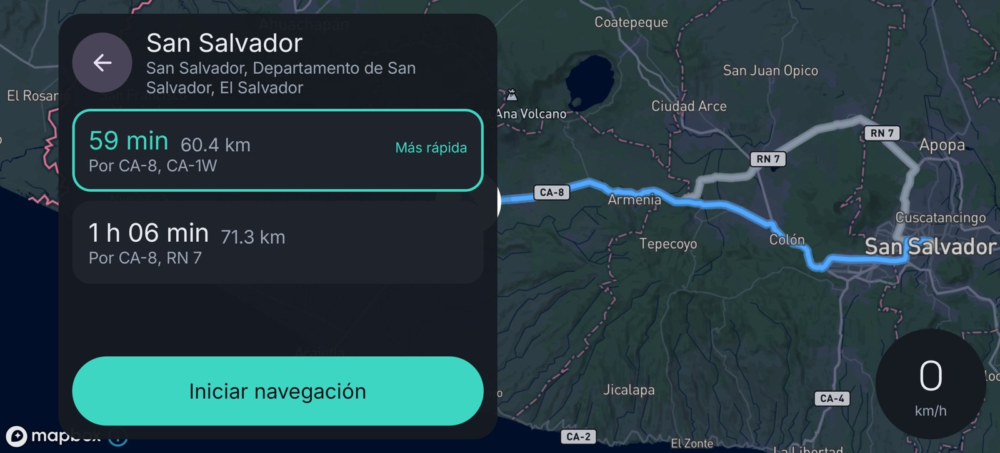
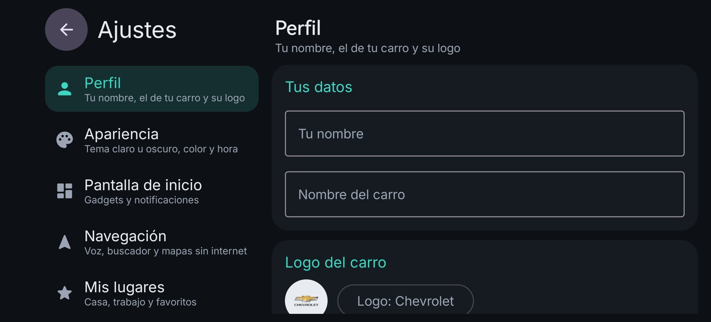

Cabina SVRutas sin internet
Tu carro, tu cabina.
Convierte tu teléfono Android en el tablero de tu carro. Calcula la ruta y te guía por voz aunque no tengas datos, con todo El Salvador en un solo archivo, y reúne tu música, la radio y tus llamadas en una pantalla.
- Navegación
- Sin internet
- Música
- Radio
Próximamente en Google Play · Gratis y sin anuncios · Hecho en El Salvador · App Android para manejar

Se fue la señal, la ruta sigue
Cuando te quedas sin internet, la app lo avisa por voz y pasa sola al mapa y las rutas guardadas en tu teléfono.
🛣️ Calcula la ruta
- En tu teléfono, sin datos móviles
- Recalcula en el momento si te desvías
- Guía por voz en español, y baja la música al hablar
🗺️ Mapa propio
- Calles con nombre de todo El Salvador
- De día y de noche, también en el inicio
- La ruta que falta en color y lo recorrido en gris
🔎 Busca y dicta
- Lugares, colonias y calles sin conexión
- Dictado por voz sin internet en teléfonos compatibles
- Descargas una vez y no vence
Lo que pesa cada cosa
El directorio de El Salvador viene dentro de la app. Los demás países se descargan por separado, gratis, desde Ajustes.
Rutas y mapa de El Salvador: 12.6 MB de descarga, 27 MB ya instalado. En los demás países la app busca lugares sin internet; las rutas sin internet son solo de El Salvador.
Archivos publicados en cabina-sv-mapas. Datos © colaboradores de OpenStreetMap.
| 🇸🇻 El SalvadorIncluido en la app | 41,151 | 1.1 MB |
|---|---|---|
| 🇬🇹 Guatemala | 52,978 | 1.5 MB |
| 🇭🇳 Honduras | 34,608 | 0.9 MB |
| 🇳🇮 Nicaragua | 39,552 | 1.1 MB |
| 🇨🇷 Costa Rica | 108,841 | 2.9 MB |
| 🇵🇦 Panamá | 35,703 | 1.0 MB |
| Total de lugares | 312,833 |
¿En qué se diferencia de Google Maps?
Google Maps es excelente para el tráfico y tiene cobertura mundial. Cabina SV es otra cosa: un tablero completo para tu carro, pensado para El Salvador.
| Cabina SV | Google Maps | |
|---|---|---|
| Qué es | Tablero para el carro: mapa, música, radio, llamadas y notificaciones | Mapa y navegación |
| Preparar el uso sin internet | Un archivo con todo El Salvador, sin recortar zonas | Eliges y descargas las zonas que quieras |
| Vigencia | No vence | Vence y se actualiza cada cierto tiempo |
| Guía sin internet | Sí, en El Salvador | Sí, dentro de la zona descargada |
| Tráfico en vivo | Solo con internet, con datos de Mapbox | Solo con internet |
| Cobertura sin internet | Rutas en El Salvador y búsqueda en 6 países | Las zonas que descargues, donde Google lo permite |
Google Maps es una marca de Google LLC. Cabina SV no está afiliada a Google. Información de la ayuda de Google Maps, noviembre de 2026.
Así funciona
Todo en horizontal, pensado para el soporte del carro.





Todo en una pantalla
Lo que necesitas al manejar, sin cambiar de app.
🧩 Inicio personalizable
- Mueve, oculta e intercambia los gadgets
- Logo de tu carro, radio, minimapa, música y llamadas
- Hora, velocidad y avisos de un vistazo
🧭 Navegación
- Guía por voz, con y sin internet
- Varias rutas para elegir y límite de velocidad de la calle, con internet
- Mapa de día o de noche según la hora
📍 Mis lugares
- Mantén presionado el mapa para guardar
- Casa, Trabajo o Favorito
- Edítalos o bórralos cuando quieras
🎵 Música local
- Por carpetas, canciones, artistas, álbumes y playlists
- Recuerda la canción y dónde te quedaste
- Controla también Spotify y YouTube Music
📻 Radio por internet
- Miles de emisoras de radio-browser.info
- Tus favoritas y la última que escuchaste
- Desliza para cambiar de emisora
🔔 Notificaciones y llamadas
- Panel que se cierra solo
- Llama a tus favoritos con un toque
- Acceso a tus llamadas recientes
🌗 Tema
- Claro, oscuro o automático
- Cambia con la hora, igual que el mapa
- Tu color de acento
🔵 Bluetooth del carro
- Se abre sola al conectar tu carro
- Tú eliges qué Bluetooth es el de tu carro
👋 Tour de bienvenida
- Resalta cada parte del inicio
- Puedes saltarlo
- Y verlo otra vez desde Ajustes
Ficha técnica
Lo que necesitas saber antes de instalarla.
| Versión | 1.0.0 |
|---|---|
| Sistema | Android 8.0 o superior |
| Orientación | Horizontal |
| Tamaño | 55 a 75 MB según el teléfono |
| Idioma | Español |
| Precio | Gratis, sin anuncios ni cuenta |
| Desarrollador | Rafael Aguilar · El Salvador |
| Sin internet | Mapa de calles, rutas y guía por voz (El Salvador), búsqueda de lugares, dictado en teléfonos compatibles y tu música |
|---|---|
| Con internet | Mapa detallado de Mapbox, varias rutas, tráfico, límite de velocidad, radio y descargas |
| Rutas sin internet | El Salvador: 12.6 MB de descarga, 27 MB instalado |
| Mapa | Mapbox, con tu token gratuito personal |
| Lugares y calles | © colaboradores de OpenStreetMap |
| Permisos | Ubicación, música, micrófono, contactos, llamadas, notificaciones y Bluetooth. Para qué se usa cada uno |
Preguntas frecuentes
¿Por qué necesito un token de Mapbox?
El mapa lo da Mapbox. Cada persona usa su propio token gratuito, así nadie gasta la cuota de otro. Se crea en minutos en account.mapbox.com y se pega en la app, que te guía paso a paso. También hace falta tenerlo puesto para ver el mapa sin internet, aunque en ese momento no se gasta.
¿Funciona sin datos móviles?
Sí. Descarga una vez “Rutas sin internet” en Ajustes > Navegación y la app mostrará su mapa, calculará la ruta y te guiará por voz sin datos, en El Salvador. También puedes buscar lugares y escuchar tu música.
¿Mis datos salen del teléfono?
No hay cuentas ni publicidad. Tus contactos, música y notificaciones se quedan en el teléfono. Con internet, Mapbox recibe tu ubicación para mostrarte el mapa y calcular rutas. Sin internet, la ruta se calcula en tu teléfono.
¿El mapa sin internet es igual al de siempre?
Es más sencillo: muestra calles con su nombre, ciudades, pueblos y colonias. No trae parques, ríos, edificios ni negocios, pero la búsqueda sí encuentra lugares.
¿Dónde la descargo?
Muy pronto en Google Play.